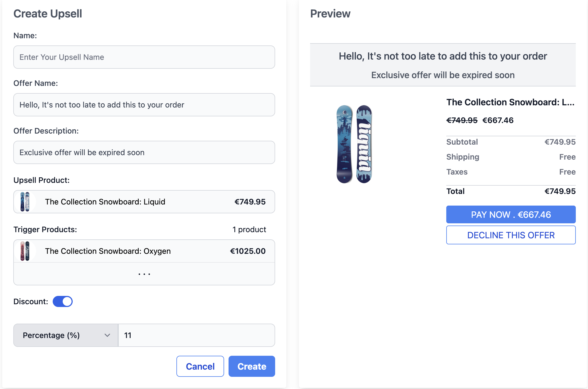

Crosslink
Crosslink is a SaaS platform that helps e-commerce merchants increase their average order value through intelligent, AI-driven cross-sell and upsell recommendations.
Who it’s for
Small and medium-sized e-commerce businesses using Shopify who want to increase
revenue without complex setup.
Crosslink is built with a modular architecture and will be expanded in the future
to support other e-commerce platforms such as PrestaShop,
WooCommerce, and additional marketplaces.
Product Configuration
Cross-sell Configuration
Define complementary products to be recommended together, based on purchase behavior, product similarity, and AI-driven insights.

Upsell Configuration
Configure higher-value product recommendations to encourage upgrades and increase average order value at key moments in the purchase journey.
Dashboard Preview
The Crosslink dashboard allows merchants to track conversion rates, view product performance, and monitor AI-driven recommendations in real time.

Technology
- AWS ECS for containerized backend services
- PostgreSQL (Amazon RDS)
- Redis for caching and background tasks
- Machine learning models for personalized product recommendations
- Event-based data pipelines for training and evaluation
- React (TypeScript) frontend
- Django REST API backend
Project Status
MVP currently in development. Initial AI recommendation models are being designed and evaluated using early product and interaction data.
Contact
Van Tien Nguyen
Paris, France
tiennguyenhust@gmail.com